library(Matrix) # install.packages("Matrix")
library(hdf5r) # install.packages("hdf5r")
library(rhdf5) # BiocManager::install("rhdf5")
library(dplyr)
library(ggplot2)
library(patchwork)
library(Seurat) ## paquete principal de este capítuloPráctica 2: COVID-19 vs healhty
Reducción de dimensiones e integración de datos
Descripción de los datos
Información general
- Título del estudio: Immunophenotyping of COVID-19 and Influenza Underscores the Association of Type I IFN Response in Severe COVID-19
- Especie: Homo sapiens
- Número de acceso de la base de datos GEO (Gene Expression Omnibus): GSE149689
- Tipo de experimento: scRNA-seq
Paso 1. Cargar paquetes y datasets en R
Cargar paquetes
Cargar el dataset de pbmc3k
# Cargar el objeto desde el archivo RDS
pbmc <- readRDS("output/pbmc3k_tutorial.rds")
# Verificar qué contiene
pbmcAn object of class Seurat
33538 features across 2548 samples within 1 assay
Active assay: RNA (33538 features, 0 variable features)
16 layers present: counts.covid_1, counts.covid_15, counts.covid_16, counts.covid_17, counts.ctrl_5, counts.ctrl_13, counts.ctrl_14, counts.ctrl_19, data.covid_1, data.covid_15, data.covid_16, data.covid_17, data.ctrl_5, data.ctrl_13, data.ctrl_14, data.ctrl_19Paso 2. Visualización de la relación entre media y varianza de las muestras
pbmc <- FindVariableFeatures(pbmc, selection.method = "vst",
nfeatures = 2000, verbose = F )
# Obtener los 10 genes más variables
top10 <- head(VariableFeatures(pbmc), 10)
# Colocar la etiqueta de los genes
plot1 <- VariableFeaturePlot(pbmc)
# Colocar la etiqueta de los genes
plot2 <- LabelPoints(plot = plot1, points = top10, repel = TRUE)
# Combinar gráficos lado a lado y poner la leyenda arriba
combined_plot <- plot1 + plot2 + plot_layout(guides = "collect") & theme(legend.position = "top")
combined_plot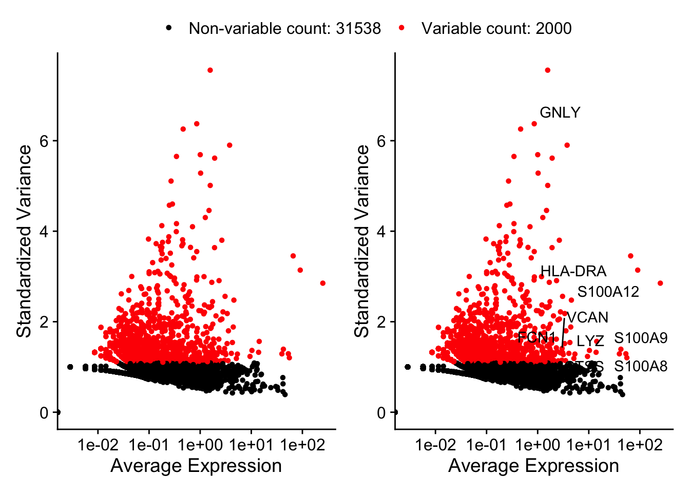
Paso 3. Escalado de los datos y reducción de dimensiones incial (PCA)
pbmc <- ScaleData(pbmc, features = VariableFeatures(pbmc))Centering and scaling data matrixpbmc_pca <- RunPCA(pbmc, verbose = F, npcs = 20)Verificar los nuevos campos agregados
Reductions(pbmc_pca)[1] "pca"Visualización del PCA
DimPlot(pbmc_pca, reduction = "pca") + ggtitle("PCA con genes variables")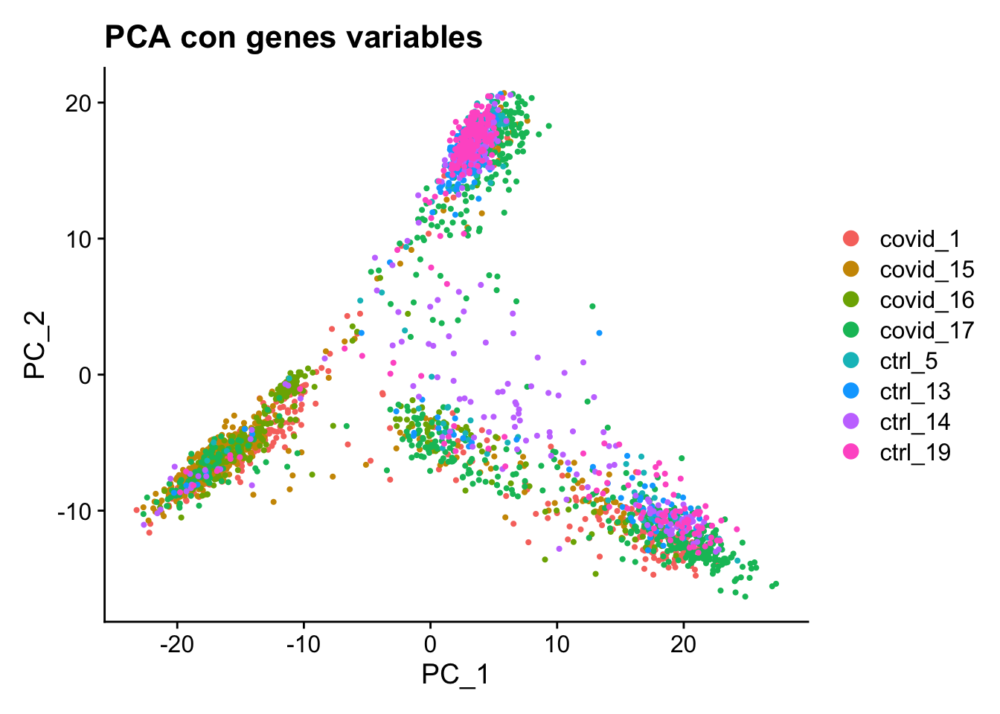
Exploración inicial con ElbowPlot()
ElbowPlot(pbmc_pca)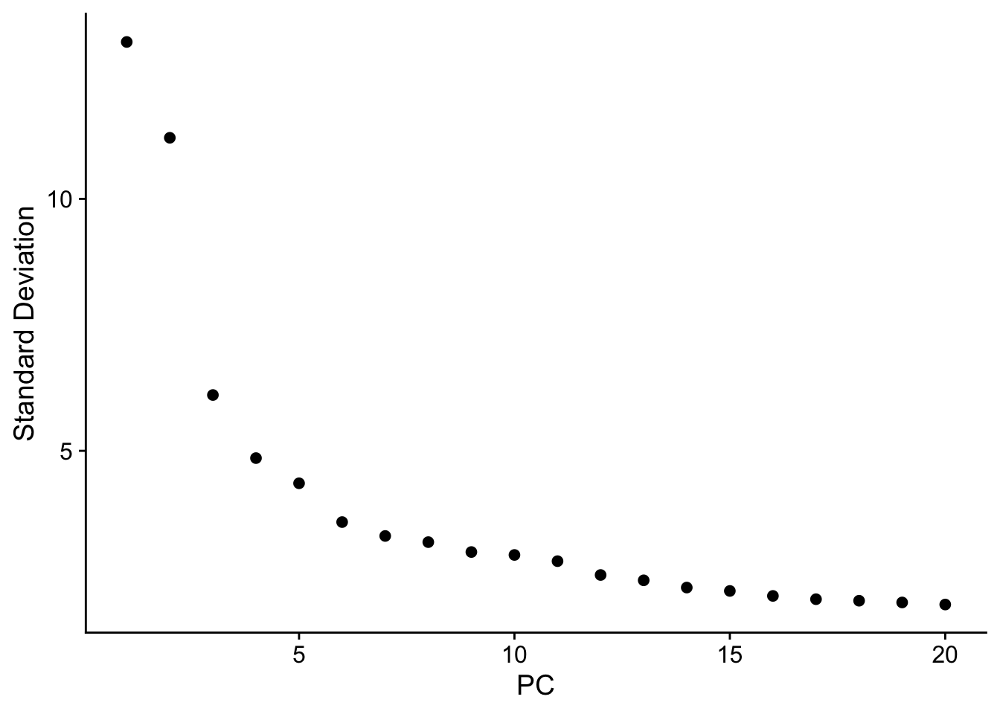
¿Qué PCs son estadísticamente significativos?
pbmc_jack <- JackStraw(pbmc_pca, num.replicate = 100)
# Asignar puntuaciones de significancia a las PCs
pbmc_jack <- ScoreJackStraw(pbmc_jack, dims = 1:20)
# Visualizar las PCs significativas
JackStrawPlot(pbmc_jack, dims = 1:20)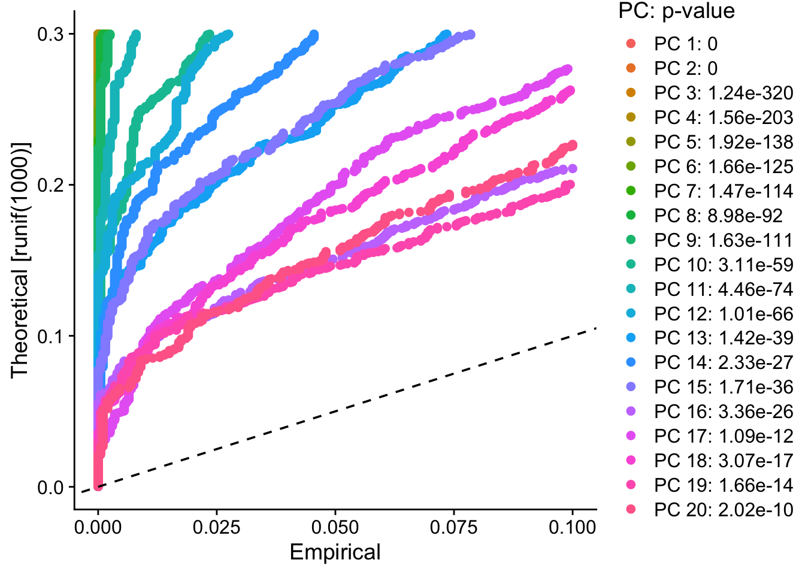
Genes que impulsan PC1- PC10
VizDimLoadings(pbmc_pca, dims = 1:15, reduction = "pca")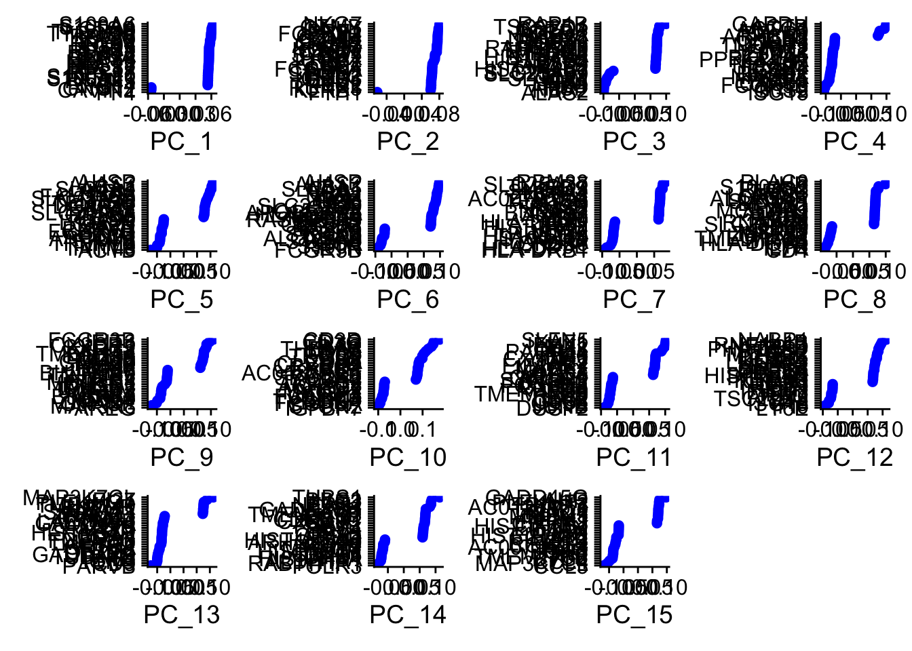
¿Qué genes y células están impulsando cada PC?
Ver un solo PCA:
DimHeatmap(pbmc_pca, dims = 1, cells = 500, balanced = TRUE)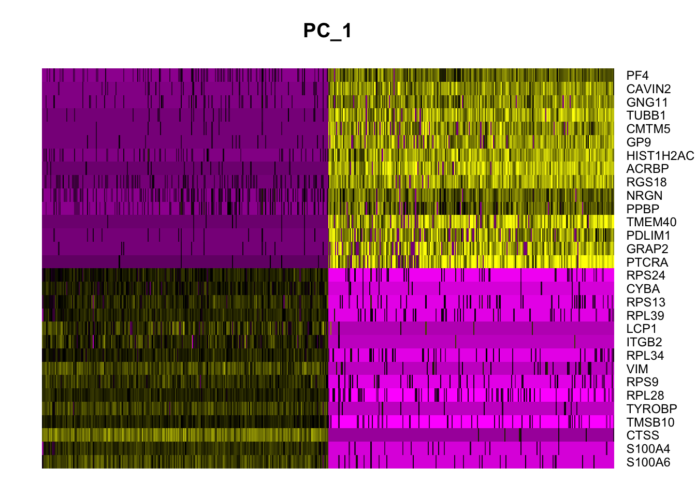
Observar los primeros 15 PCAs
DimHeatmap(pbmc_pca, dims = 1:15, cells = 500, balanced = TRUE)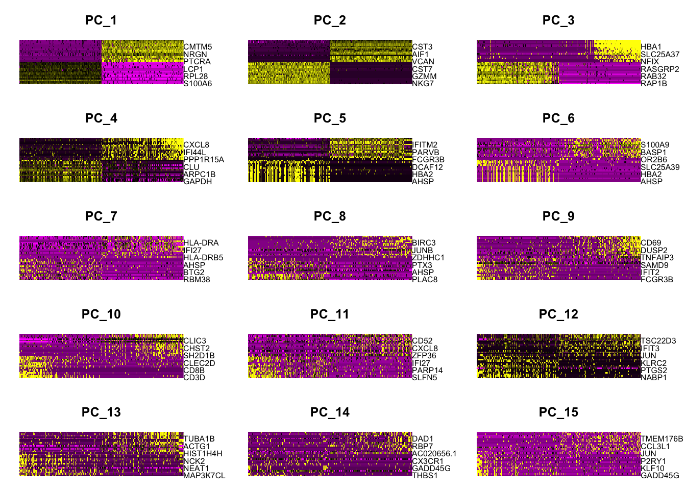
Paso 4. Clustering de células
El algoritmo de clustering en Seurat (basado en Louvain o Leiden) detecta comunidades en el grafo de vecinos.
El parámetro
resolutionajusta la sensibilidad:- Valores bajos (ej. 0.2–0.5): producen menos clusters, más grandes y generales.
- Valores altos (ej. 1–2): producen más clusters, más pequeños y específicos.
pbmc_pca <- FindNeighbors(pbmc_pca, dims = 1:15)Computing nearest neighbor graphWarning: package 'future' was built under R version 4.5.2Computing SNNpbmc_pca <- FindClusters(pbmc_pca, resolution = 0.5, cluster.name = "unintegrated_clusters")Modularity Optimizer version 1.3.0 by Ludo Waltman and Nees Jan van Eck
Number of nodes: 2548
Number of edges: 77950
Running Louvain algorithm...
Maximum modularity in 10 random starts: 0.9187
Number of communities: 12
Elapsed time: 0 secondsPaso 5. Reducciones no lineales (UMAP/t-SNE)
# PCA
pbmc_pca <- RunUMAP(pbmc_pca, dims = 1:15, verbose = F)Warning: The default method for RunUMAP has changed from calling Python UMAP via reticulate to the R-native UWOT using the cosine metric
To use Python UMAP via reticulate, set umap.method to 'umap-learn' and metric to 'correlation'
This message will be shown once per session# t-SNE
pbmc_tsne <- RunTSNE(pbmc_pca, dims = 1:15, verbose = F)
# UMAP
pbmc_umap <- RunUMAP(pbmc_pca, dims = 1:15, verbose = F)
wrap_plots(
DimPlot(pbmc_pca, reduction = "pca"),
DimPlot(pbmc_tsne, reduction = "tsne"),
DimPlot(pbmc_umap, reduction = "umap"),
ncol = 3
) + plot_layout(guides = "collect")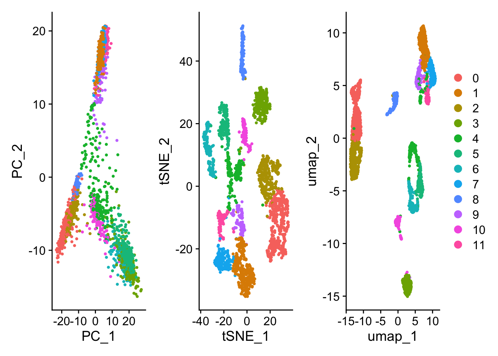
Visualización de muestras y cluster detectados:
# visualizacion grafica
DimPlot(pbmc_umap, reduction = "umap", group.by = c("type", "ident"))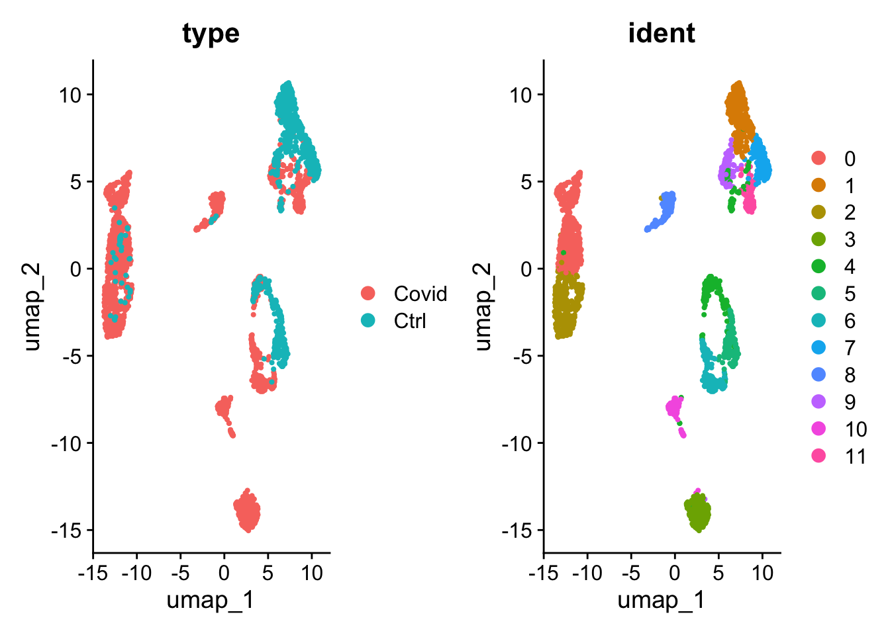
Paso 6. Integración de datasets
Tras ejecutar IntegrateData(), el objeto Seurat contendrá un nuevo ensayo (Assay) con la matriz de expresión integrada (o corregida por batch effect). Ten en cuenta que los valores originales (sin corregir) siguen almacenados en el objeto, en el ensayo «RNA», por lo que puedes alternar entre ambos.
# install.packages("harmony")
suppressMessages(library(harmony))Warning: package 'Rcpp' was built under R version 4.5.2# Integración con Harmony
pbmc_integrated <- IntegrateLayers(
object = pbmc_pca,
method = HarmonyIntegration, # método de integración
orig.reduction = "pca", # reducción original
new.reduction = "harmony", # nombre de la nueva reducción
verbose = FALSE
)The `features` argument is ignored by `HarmonyIntegration`.
This message is displayed once per session.
Note
El mensaje que sale de:
The `features` argument is ignored by `HarmonyIntegration`.
This message is displayed once per session.Solo es una advertencia: HarmonyIntegration ignora el argumento features porque siempre usa las PCs ya calculadas como entrada. Tu integración sí se ejecutó correctamente.
A continuación, podemos utilizar esta nueva matriz integrada para el análisis y la visualización posteriores. Aquí escalamos los datos integrados, visualizamos los resultados con UMAP y TSNE. Los conjuntos de datos integrados se agrupan por tipo de célula, en lugar de por dataset.
# Usar la reducción integrada para clustering y UMAP
pbmc_integrated <- FindNeighbors(pbmc_integrated, reduction = "harmony", dims = 1:15)Computing nearest neighbor graphComputing SNNpbmc_integrated <- FindClusters(pbmc_integrated, resolution = 0.5)Modularity Optimizer version 1.3.0 by Ludo Waltman and Nees Jan van Eck
Number of nodes: 2548
Number of edges: 86118
Running Louvain algorithm...
Maximum modularity in 10 random starts: 0.8932
Number of communities: 9
Elapsed time: 0 seconds# t-sne
pbmc_integrated_tsne <- RunTSNE(pbmc_integrated, reduction = "harmony", dims = 1:15)
# umap
pbmc_integrated_umap <- RunUMAP(pbmc_integrated, reduction = "harmony", dims = 1:15, verbose = F)
# type es igual a condition
# visualizacion grafica
DimPlot(pbmc_integrated, reduction = "umap", group.by = c("orig.ident", "type", "seurat_clusters"))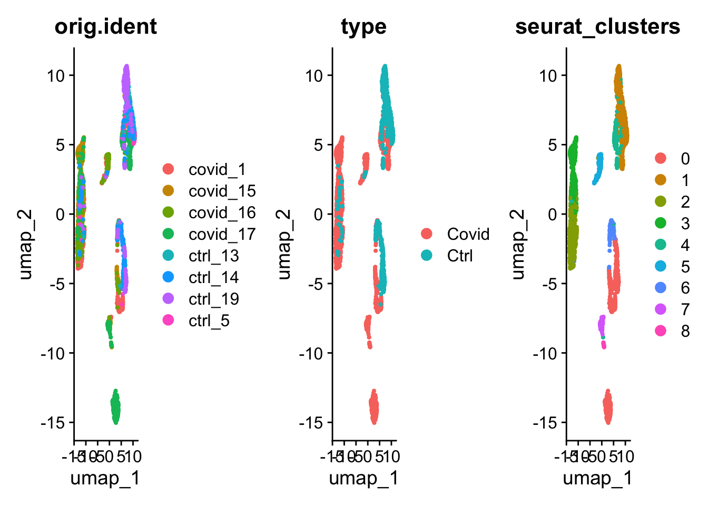
En este panel vamos a comparar cómo se ven los mismos datos usando tres métodos de reducción de dimensionalidad: PCA, t-SNE y UMAP. Primero mostramos los datos crudos (sin integración) y después los datos integrados con Harmony. La idea es que observen cómo cada técnica representa la estructura celular y cómo la integración corrige los efectos de lote.
wrap_plots(
# Raw data
DimPlot(pbmc_pca, reduction = "pca", group.by = "orig.ident")+NoAxes()+ggtitle("PCA raw data"),
DimPlot(pbmc_tsne, reduction = "tsne", group.by = "orig.ident")+NoAxes()+ggtitle("tSNE raw data"),
DimPlot(pbmc_umap, reduction = "umap", group.by = "orig.ident")+NoAxes()+ggtitle("UMAP raw data"),
# Datos integrados despues de Harmony
DimPlot(pbmc_integrated, reduction = "pca", group.by = "orig.ident")+NoAxes()+ggtitle("PCA integrated"),
DimPlot(pbmc_integrated_tsne, reduction = "tsne", group.by = "orig.ident")+NoAxes()+ggtitle("tSNE integrated"),
DimPlot(pbmc_integrated_umap, reduction = "umap", group.by = "orig.ident")+NoAxes()+ggtitle("UMAP integrated"),
ncol = 3
) + plot_layout(guides = "collect")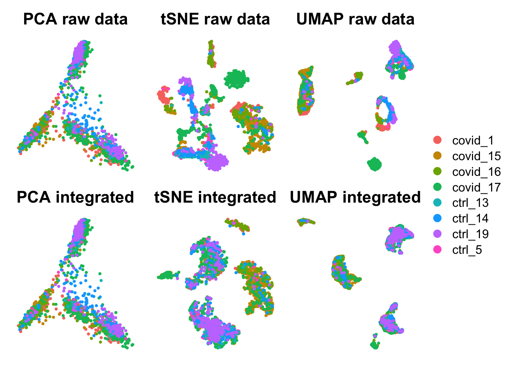
Paso 7. Guardar dataset
saveRDS(pbmc_integrated_umap, file = "output/pbmc3k_integrated.rds")